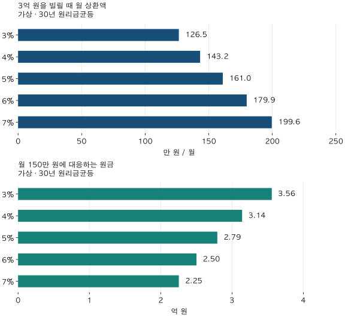

금리와 상환 부담 · 금리 1%p의 무게
주택담보대출 금리 1%p 오르면? 3억·30년 월 상환액 비교
3억 원·30년 가상 대출의 금리 3~7% 월 상환액과 월150만 원의 역산 원금을 비교합니다. 남은 원금·만기·총이자, 명목금리와 실질 부담의 차이를 계산기와 표로 확인하세요.
분석 기간 · 가상 상환 조건 · 실측은 2021/2022/2025년 12월 | 보유 자료 스냅샷 생성 · 2026-10-04 (KB 자료)
주택담보대출 금리가 4%에서 5%로 오르면 월 납입액도 25% 늘어날까요? 이자만 내는지, 원금도 나눠 갚는지에 따라 답이 달라집니다. 첫 집이나 갈아타기 예산을 잡는 실거주자를 위해 같은 원금·기간에서 금리만 바꿔 계산합니다.
금리 1%p 상승은 상환액 1% 상승인가요?
아닙니다. 4%에서 5%는 1%포인트 상승이며, 금리 자체의 상대 증가율은 25%입니다. 3억 원의 이자만 계산하면 월 100만 원에서 125만 원으로 25만 원 늘어납니다. 그러나 원리금균등 상환액에는 원금도 포함돼 같은 계산을 적용할 수 없습니다.
금융위원회의 대출 기초상식 안내는 원리금균등을 원금과 이자를 합친 납입액이 일정한 방식, 원금균등을 원금을 나눠 갚으며 이자가 줄어드는 방식으로 설명합니다. 만기일시는 원금을 만기에 갚습니다. 이 글의 주 계산은 금리가 일정한 원리금균등입니다.
월 상환액 = 원금 × 월이율 ÷ [1 − (1 + 월이율)−상환개월]
월이율은 연 명목금리 ÷ 12입니다. 연 4%라면 0.04 ÷ 12, 30년이면 360개월입니다. 금리가 0이면 원금 ÷ 개월로 계산합니다. 매월 말 납부하고 거치·수수료·연체·중도상환이 없다고 가정합니다.
3억 원·연 4%·30년의 첫 달 이자는 100만 원이며 원금 상환분은 약 43.2만 원입니다. 시간이 지나 잔액이 줄면 같은 월 납입액 안에서 이자는 줄고 원금 상환분이 늘어납니다. 원금 상환은 부채를 줄이는 돈이지만 그달 통장에서 나가야 하는 현금이라는 점은 같습니다.
금리 3~7%에서 월 납입액과 같은 예산의 원금은 어떻게 달라지나요?
첫 계산은 원금을 3억 원으로 고정합니다. 다음 계산은 월 상환액을 150만 원으로 고정해 원금을 거꾸로 구합니다. 모두 30년이며 금리는 기간 내내 같다는 가정입니다. 실제 시장금리 범위나 가능한 상품을 제시하는 표가 아닙니다.

| 연금리 | 3억 원의 월 상환액 | 3억 원의 30년 총이자 | 월 150만 원의 역산 원금 |
|---|---|---|---|
| 3% | 126.5 | 15,533.2 | 35,578.4 |
| 4% | 143.2 | 21,560.9 | 31,419.2 |
| 5% | 161.0 | 27,976.7 | 27,942.2 |
| 6% | 179.9 | 34,751.5 | 25,018.7 |
| 7% | 199.6 | 41,852.7 | 22,546.1 |
4%와 5%의 역산 원금 차이는 약 3,477만 원입니다. 금리가 낮아지면 같은 월 예산으로 감당할 수 있는 산술상 원금은 커집니다. 다만 소득·기존 부채·담보평가·정책 한도·상품 만기 조건이 적용되면 실제 대출은 더 작거나 불가능할 수 있습니다.
집값을 생각하려면 자기자금도 따로 놓아야 합니다. 가상으로 쓸 수 있는 자기자금이 2억 원이고 역산 원금 전액을 실제로 빌릴 수 있다면, 4%의 합계는 약 5.14억 원, 5%는 약 4.79억 원입니다. 여기서 취득·중개·이사비와 남겨둘 현금을 빼야 합니다. 대출 실행을 확인하기 전에는 이 합계를 ‘살 수 있는 집값’으로 확정할 수 없습니다. 가격 차액과 실제 추가 현금의 구분도 같은 원칙입니다.
두 금리에서 내 가상 조건을 비교해 볼까요?
같은 원금·개월을 두고 A안과 B안의 연금리를 바꿔보세요. 원금과 월 예산은 만원, 기간은 개월입니다. 30년은 360개월입니다. 월 예산은 역산 비교에만 쓰며 실제 납입액을 자동으로 그 예산에 맞추지는 않습니다.
이미 5년 갚은 대출도 처음 빌린 3억 원으로 계산하나요?
기존 대출의 금리 변경을 비교하려면 변경 시점의 남은 원금과 남은 기간을 확인해야 합니다. 새로 3억 원을 30년 동안 빌리는 비교와 조건이 다릅니다.
가상 예시:3억 원·30년·4% 대출을 60회 정상 상환한 뒤의 잔액은 약 27,134.3만 원입니다. 이 잔액을 남은 300개월 동안 5%로 다시 원리금균등 계산하면 월 158.6만 원으로, 기존 143.2만 원보다 15.4만 원 늘어납니다. 처음부터 3억 원·30년을 비교한 17.8만 원과 같지 않습니다.
실제 변동금리는 약정된 변경일·주기·재산정 방식에 따라 적용됩니다. 기존 고정금리 대출은 시장금리가 올랐다는 이유만으로 같은 시점에 납입액이 바뀌지 않습니다. 대환이라면 새 대출의 조건과 기존 대출의 중도상환수수료 등도 확인해야 합니다.
만기를 늘리거나 원금균등으로 바꾸면 부담이 줄까요?
만기를 늘리면 월 납입액과 총이자는 반대로 움직입니다
| 상환기간 | 월 상환액 | 만기까지 총이자 |
|---|---|---|
| 20년 | 181.8 | 13,630.6 |
| 30년 | 143.2 | 21,560.9 |
| 40년 | 125.4 | 30,183.1 |
30년에서 40년으로 늘리면 월 상환액은 143.2만 원에서 125.4만 원으로 줄지만, 총이자는 약 2.16억 원에서 3.02억 원으로 늘어납니다. 40년이 실제로 선택 가능한 만기라는 뜻은 아닙니다.
‘총이자가 크니 장기 대출은 항상 나쁘다’는 해석도 충분하지 않습니다. 당장의 현금 여유가 중요한 가구에는 낮은 월 납입액이 도움이 될 수 있습니다. 반대로 오래 유지하면 이자를 더 내며, 조기 상환 계획에는 수수료와 실행 가능성도 따릅니다. 표의 총이자는 만기까지 그대로 유지한 명목 합계로, 현재가치나 개인의 최적 선택을 계산한 값은 아닙니다.
월 납입액이 작아도 원금이 나중에 남을 수 있습니다
| 상환방식 | 첫 달 납입액 | 마지막 달 납입액 | 30년 총이자 |
|---|---|---|---|
| 원리금균등 | 143.2 | 143.2 | 21,560.9 |
| 원금균등 | 183.3 | 83.6 | 18,050.0 |
| 만기일시 | 100.0 | 30,100.0 | 36,000.0 |
원금균등은 첫 달 부담이 더 크지만 잔액이 빠르게 줄어 총이자가 원리금균등보다 작습니다. 만기일시는 월 이자 100만 원만 보고 가볍다고 판단하기 쉽지만, 마지막 달에 원금 3억 원과 이자를 함께 갚아야 합니다. 이 표는 방식의 차이를 보여주는 산술이며, 해당 조건의 실제 주담대 상품이 있다는 뜻은 아닙니다.
명목금리가 오르는데 실질 자금부담 지표는 내려갈 수도 있나요?
그럴 수 있습니다. 프로젝트의 실질 자금부담 대용치는 KB 공통 월간 주담대 금리 − 소비자물가 전년동월상승률입니다. 이는 관측 물가를 사용한 연구용 차이이며 내 대출의 실제 적용금리나 예상 실질금리는 아닙니다.
| 원자료 월 | KB 명목금리 (%) | CPI 전년동월상승률 (%) | 차이 (%p) |
|---|---|---|---|
| 2021-12 | 3.63 | 3.70 | -0.07 |
| 2022-12 | 4.63 | 5.02 | -0.39 |
| 2025-12 | 4.23 | 2.31 | 1.92 |
2021년 12월에서 2022년 12월로 명목금리는 3.63%→4.63%로 올랐습니다. 하지만 물가상승률도 올라 둘의 차이는 −0.07%포인트→−0.39%포인트로 내려갔습니다. 차감 지표의 하락이 같은 원금 대출의 월 납입액 감소를 의미하지는 않습니다. 내 소득이 물가와 같은 속도로 늘었다는 보장도 없습니다. 이 세 달만으로 집값 반응이나 대출 선택을 설명하지 않습니다.
위 실측은 KB 데이터허브의 공통 주담대 금리 계열와 한국은행 ECOS의 소비자물가지수를 보유 원천에서 대조한 것입니다. 지역·개인별 견적이 아니며 오늘의 홈페이지 수치를 새로 가져와 섞지 않았습니다. 연구에서는 원자료월보다 두 달 뒤에 사용하지만, 이 표는 혼동을 막기 위해 원자료월로 표시합니다.
심사에 쓰는 금리도 별개입니다. 금융위의 2025년 10월 15일 설명은 스트레스 DSR의 가산금리가 심사 계산에 사용되며 실제 대출금리에 그대로 더해지는 금리는 아니라고 구분합니다. 이 글은 그 정의만 사용하고, 현재 규정의 수치·적용 대상·경과규정을 계산하지 않습니다. 계산기의 결과는 DSR 한도가 아닙니다.
월 예산을 정하기 전에 무엇을 적어야 하나요?
- 지금 계산할 원금:새 대출액인지, 기존 대출의 남은 잔액인지 구분합니다.
- 기간과 방식:남은 개월·거치·원리금균등/원금균등/만기일시를 확인합니다.
- 금리:실제 제시받은 금리·고정 기간·다음 변경일과 가상 비교 금리를 따로 적습니다.
- 월 현금:원금과 이자를 합친 납입액에 다른 부채·관리비·생활비·비상자금을 함께 봅니다.
- 구입자금:확인된 대출 실행액과 사용 가능한 자기자금에서 거래비용·남겨둘 현금을 구분합니다.
월세와 비교할 때도 대출 납입액 전부를 이자 비용으로 읽지 마세요. 원금은 부채를 줄이지만 현금흐름 부담은 남습니다. 보증금 추가 자금의 기회비용은 보증금과 월세 두 조건 비교에서 별도로 계산할 수 있습니다.
계산·자료·검증 방법 자세히 보기
- 가상 산술: 연 명목금리를 12로 나누고 매월 말 동일 간격 납부를 가정했습니다. 원 단위 월별 반올림은 하지 않고 표시할 때 만원 소수 첫째 자리로 반올림했습니다. 실제 일수·첫 납입일·원 단위 처리·수수료에 따라 금융기관 상환표와 차이가 날 수 있습니다. 저축은행중앙회 공시 안내도 일정 금리를 가정한 예시금액과 실제 상환액을 구분합니다.
- 검증: 공식 계산을 고정밀 Decimal의 월별 잔액 회귀 및 매월 현금흐름 현재가치 합과 105조건에서 대조했습니다. 0금리·매우 낮은 금리·1개월·장기 만기를 포함하며 역산 원금을 다시 월 상환액으로 계산했습니다. 계산기는 독립 Python 결과와 84조건에서 대조했습니다.
- 실측 자료: 현재 검증된 실질 자금부담 자료의 사전 선정 2021/2022/2025년 12월만 사용했습니다. KB 자료의 생성일은 2026-10-04이며 원천 검증일은 2026-10-10입니다. CPI는 보유 ECOS 총지수(2020=100)에서 100×(당월/전년동월−1)을 재계산했습니다. 당시 공개 빈티지·개인 실제 차입 조건은 복원하지 않았습니다.
- 원천 대조: 저장된 명목금리를 KB 원계열과, 물가 및 차감값을 ECOS 원자료 직접 산술과 대조했습니다. 연구용 두 달 지연과 원자료월을 확인하고 현재 지문·입력 파일 해시를 전후 검증했습니다. 별도 모형 학습·시장 전망·개별 신용심사는 수행하지 않았습니다.
- 공개: 가상 계산과 세 실측월의 공개 JSON을 제공합니다. 가상표와 실측표를 구분하며 거래·개인·계좌 정보는 없습니다. 금리 3~7%와 20/30/40년은 설명용 조건이지 실제 상품 범위가 아닙니다.
분석·집필:파파펭귄 (Nobot Kang). 에이전트로 공식 설명 확인·독립 산술 검증·초안 검토를 보조했습니다. 공식 설명 확인일:2026-10-10.